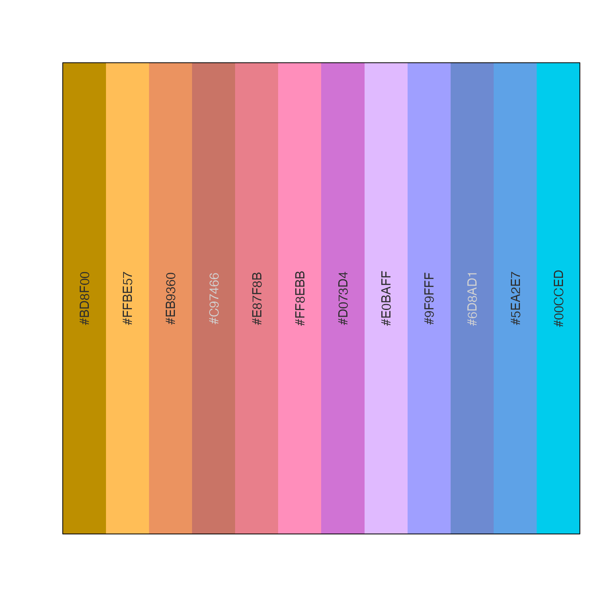

rainbow categorical colors using varied luminance and chroma
rainbowJam_v1( n = NULL, alpha = 1, nfloor = 4, hues = NULL, Cvals = c(75, 95, 80, 65, 72, 80), Lvals = c(62, 83, 69, 58, 65, 74), Crange = NULL, Lrange = NULL, Cgrey = NULL, Hstart = 12.2, warpHue = TRUE, doTest = FALSE, sFactor = 1, darkFactor = 1, nameStyle = c("none", "hcl", "colors"), h1 = h2hwOptions()$h1, h2 = h2hwOptions()$h2, verbose = FALSE, ... )
Arguments
| n | integer number of categorical colors to return |
|---|---|
| alpha | numeric alpha transparency of colors, values ranging from 0 to 1. If multiple values are supplied, they are applied in order to the categorical colors returned. |
| nfloor | the minimum number of effective color slices taken from the hue color wheel, primarily used as an aesthetic choice so the first two colors will be reasonably consistent when choosing 1, 2, 3, 4, or 5 categorical colors. |
| hues | optional numeric vector of hues to use, only useful when the
exact hues should be used instead of taking slices along a hue color
wheel. Note that to use hue values with no modification, one should
also set |
| Cvals, Lvals | vector of chroma (C) and luminance (L) values to be cycled when creating colors along the vector of color hues. These values are intended to maximize visual distinctiveness of adjacent and nearly-adjacent colors. For example, varying from bright to dark may provide additional distinction between two similar color hues. |
| Crange, Lrange | vector of two numeric values which define the allowable
chroma (C) and luminance (L) ranges for |
| Hstart | the hue to use for the first hue value in the color sequence. Standard red has a hue 12.2, which is the default for this function. |
| doTest | boolen indicating whether to perform a visual test for
the |
| sFactor, darkFactor | parameters sent to |
| nameStyle | character value indicating how to name the output colors: "none" returns colors with no names; "hcl" assigns names with the color number prefix, followed by H, C, L values; "colors" names the vector by the hex color code. |
| h1, h2 | numeric vectors as used by |
| verbose | logical whether to print verbose output |
Value
vector of colors
Details
This function customizes similar functions grDevices::rainbow,
colorspace::rainbow_hcl(), and scales::hue_pal() in two main
ways:
It uses the warped color wheel (see
h2hw()which compresses the green component of the standard HCL color hue wheel, extending the yellow.It uses a varying luminance and chroma vector which was selected to optimize visual distinctiveness of adjacent colors. There is still a limit to the maximum number of effectively different categorical colors, however this function appears to improve other available methods.
This function is also intended to enable use of a custom color wheel,
for example a set of color mappings could define color-blind friendly
ranges of colors when using the warped hue functions h2hw() and
hw2h(). When warpHue=TRUE the values for h1 and
h2 are used to define a mapping from warped hues to standard
hues recognized by hcl().
Examples
rainbowJam_v1(12);#> [1] "#DF7779" "#FFAD97" "#EE906A" "#B58232" "#4EA5E5" "#85B7FF" "#8190E6" #> [8] "#C4C3FF" "#AC9BFE" "#977DD0" "#C186E5" "#FF8CDF"# be fancy and label colors using the closest R named color jamba::showColors(rainbowJam_v1(12, nameStyle="colors"));